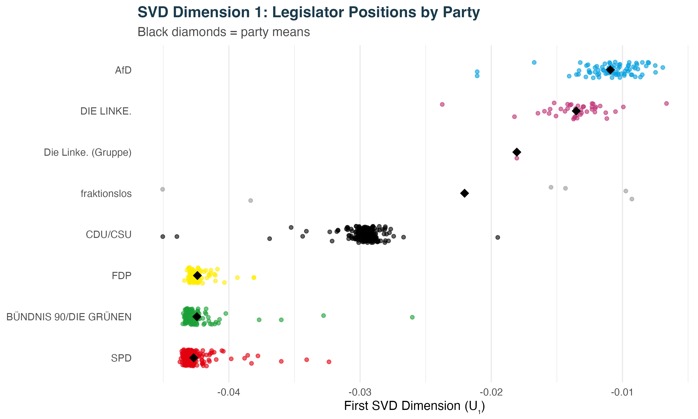
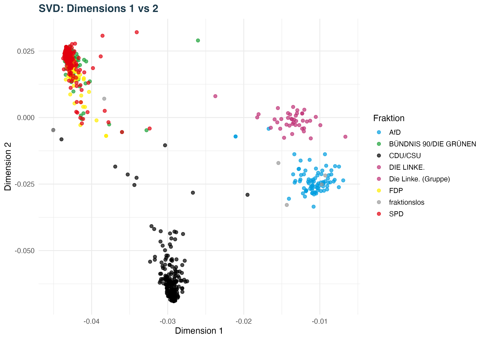
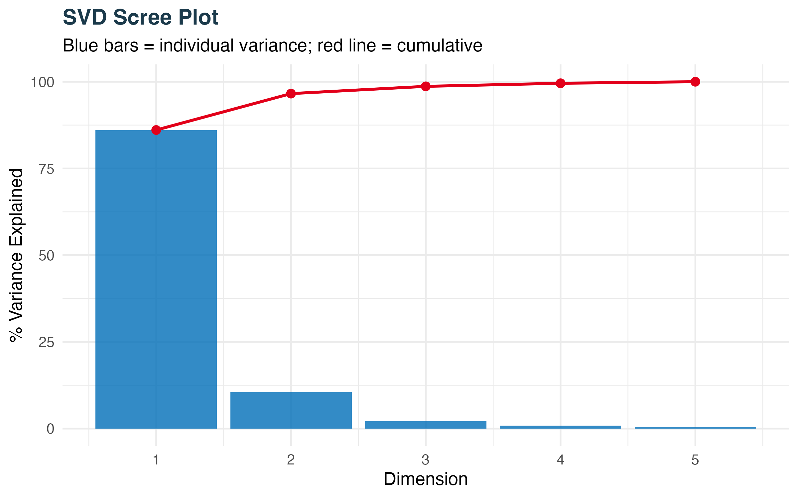
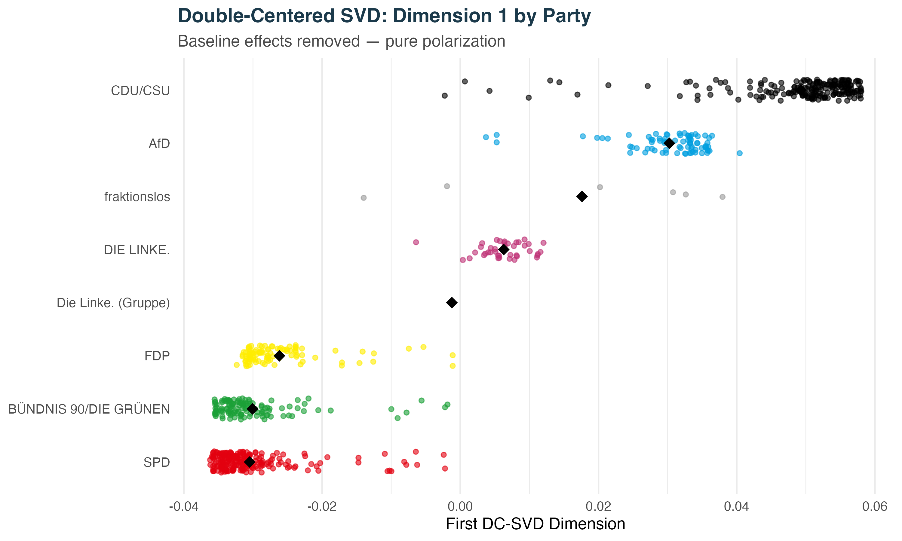
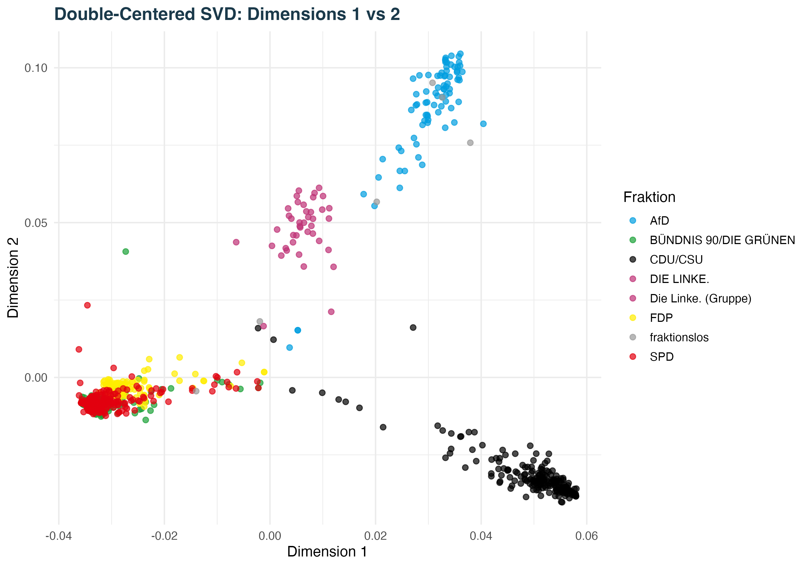
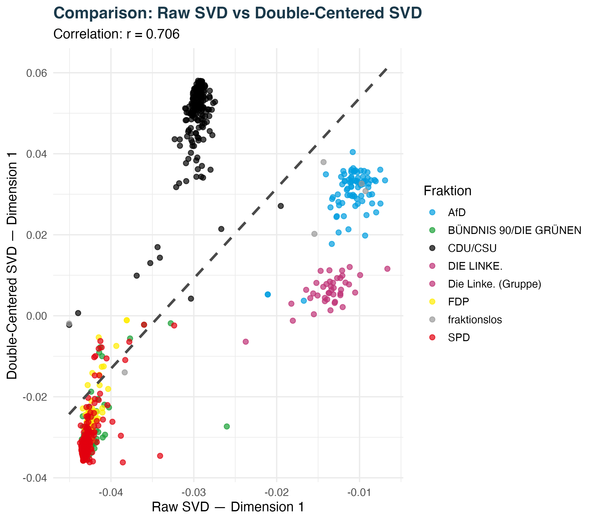
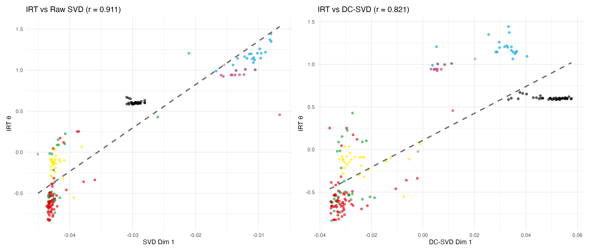
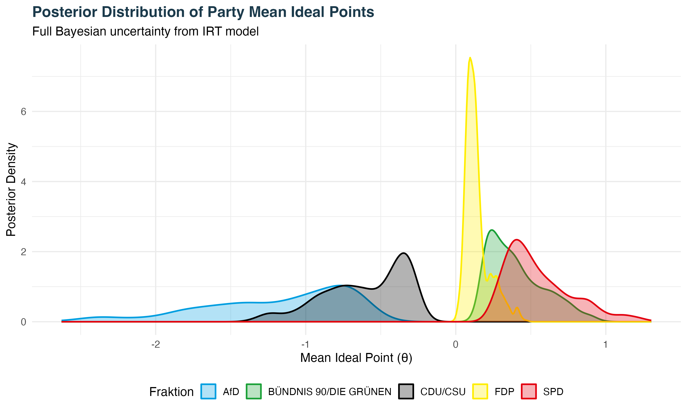
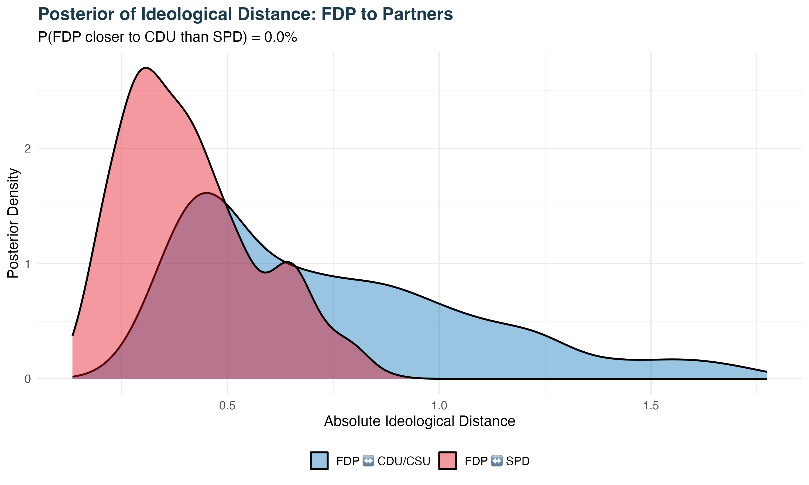

i. Introduction
When a parliament votes, it leaves a trace. Each roll call is a small data point about where every legislator stands relative to every other. With enough such traces, one can recover an underlying geometry — a low-dimensional space in which familiar political categories like left, right, or government reappear as coordinates. This is the project of ideal-point estimation, and it has been the workhorse of empirical legislative studies since Poole and Rosenthal's NOMINATE in the 1980s.
This paper applies three such estimators to the namentliche Abstimmungen of the 20th German Bundestag, the Ampel period in which SPD, Bündnis 90/Die Grünen, and the FDP formed a three-party coalition from September 2021 until its collapse in March 2025.
Crucially, we incorporate a legislative codebook that tracks whether each roll-call motion was ultimately accepted or rejected. As we will see, this binary indicator fundamentally changes how we interpret the recovered dimensions.
The substantive question is narrow: in the geometry of actual voting behaviour, did the FDP sit closer to the CDU/CSU opposition than to its own coalition partners? The answer forces us to rethink what these spatial models actually measure.
ii. Data & Imputation
The dataset comprises 161 roll-call votes across 772 legislators. Votes are recoded to a binary indicator (yes = 1, no = 0); abstentions and absences are treated as missing. Missingness is handled via double-mean imputation: a missing cell is replaced by the row mean plus the column mean minus the grand mean, then clipped to [0, 1].
The intuition is symmetric. Each missing vote is assigned the value implied by two baselines: how often the legislator generally votes yes (row mean) and how often the motion attracts yes votes (column mean). The grand mean subtraction prevents double-counting the overall yes-rate.
# 01_data_preparation.R — double-mean imputation
double_mean_impute <- function(X) {
row_means <- rowMeans(X, na.rm = TRUE)
col_means <- colMeans(X, na.rm = TRUE)
grand_mean <- mean(X, na.rm = TRUE)
# row_means[i] + col_means[j] − grand_mean
imputed_values <- outer(row_means, col_means, "+") - grand_mean
# Only substitute where NA was present
X_imp <- ifelse(is.na(X), imputed_values, X)
# Clip to valid probability range
X_imp <- pmin(pmax(X_imp, 0), 1)
return(X_imp)
}
X_imputed <- double_mean_impute(X_raw)Code 1 · From 01_data_preparation.R, Task 1.3
After imputation the matrix is dense (772 × 161 = 124,292 cells), all entries lie in [0, 1], and the matrix-based methods (SVD, double-centered SVD) can be applied directly.
iii. Baseline SVD
Singular Value Decomposition writes the imputed vote matrix as X = UΣVᵀ. The first column of U gives each legislator a coordinate on the dominant axis of variation. We use the truncated irlba SVD for the first five components and anchor the sign so that the AfD lies on the positive side of Dimension 1.
# 02_svd_analysis.R — Task 2.1: truncated SVD
svd_result <- irlba::irlba(X_imputed, nv = 5)
U <- svd_result$u # legislator coordinates
d <- svd_result$d # singular values
V <- svd_result$v # vote coordinates
# Sign anchoring: AfD positive, SPD negative
afd_d1 <- mean(U[, 1][mp_info$fraction_modal == "AfD"])
spd_d1 <- mean(U[, 1][mp_info$fraction_modal == "SPD"])
if (afd_d1 < spd_d1) {
U[, 1] <- -U[, 1]
V[, 1] <- -V[, 1]
}Code 2 · From 02_svd_analysis.R, Task 2.1
a) The two sides of Dimension 1
Computing party means on the first dimension yields a single, decisive split. The three Ampel parties (SPD, Grüne, FDP) cluster tightly at the negative end; all three opposition parties (CDU/CSU, AfD, Die Linke) sit at the positive end:
| Party | Mean Dim 1 | SD | Role |
|---|---|---|---|
| SPD | −0.0427 | 0.00133 | Coalition |
| Grüne | −0.0424 | 0.00199 | Coalition |
| FDP | −0.0424 | 0.00089 | Coalition |
| CDU/CSU | −0.0297 | 0.00198 | Opposition |
| Die Linke | −0.0135 | 0.00256 | Opposition |
| AfD | −0.0109 | 0.00232 | Opposition |
What does Dimension 1 separate? Dimension 1 splits the chamber into coalition versus opposition. SPD, Grüne, and FDP sit virtually on top of each other (≈ −0.042, with SD ≈ 0.001 for the FDP — the smallest of any party); CDU/CSU, Linke, and AfD occupy the positive half.
Is this grouping sensible? Yes, institutionally — but no, ideologically. The split makes immediate sense as a record of institutional role: every Ampel MP voted yes on the government's bills, every opposition MP voted no, and the rank-and-file discipline is near-total. But interpreting Dimension 1 as a left–right or ideological axis is plainly wrong: it would place the AfD and Die Linke as ideological neighbours, even though they sit at opposite poles of essentially every substantive policy debate in German politics. Their proximity on Dimension 1 is an artefact of both being opposition parties whose motions get voted down — not a signal of shared ideology.
Dimension 1 therefore measures parliamentary status, not preference. This is precisely the artefact that double-centering (next section) attempts to remove.

b) What do the extreme votes reveal?
To see what Dimension 1 actually loads on, we cross-reference the loadings of V[, 1] with the legislative codebook of motion outcomes:
| Vote | Loading | Outcome |
|---|---|---|
| Suizidprävention stärken | −0.105 | ✓ Accepted (Ampel) |
| Bewaffneter Streitkräfteeinsatz im Sudan | −0.104 | ✓ Accepted (Ampel) |
| Digitale Verkündung von Bundesgesetzen | −0.103 | ✓ Accepted (Ampel) |
| Weiterbetrieb von Kernkraftwerken | +0.007 | ✗ Rejected (opposition) |
| AfD-Antrag: Keine Impfpflicht gegen COVID-19 | +0.006 | ✗ Rejected (AfD) |
| AfD-Antrag zum Sondervermögen Bundeswehr | +0.005 | ✗ Rejected (AfD) |
The pattern is unambiguous. Every strongly negative-loading vote is an accepted government initiative; every positive-loading vote is a rejected opposition motion. The dimension is not measuring a substantive policy continuum — it is essentially a passage indicator: did the motion pass (negative) or fail (positive)?
This is the same artefact viewed from the vote side. Since government MPs always vote yes on bills that pass and opposition MPs always vote no, the first principal component absorbs the structural correlation between voter (coalition vs. opposition) and outcome (accept vs. reject). It is mechanical, not ideological.
c) Is Dimension 2 meaningful?
Dimension 2 explains 10.5% of the variance. Examining party means on it shows a strikingly different geometry: the CDU/CSU is isolated at −0.060 while all Ampel parties take positive values; the AfD sits near zero.
Yes, Dimension 2 appears substantively meaningful — but with a caveat. The dimension separates the two opposition blocs by style of opposition: the CDU/CSU files high volumes of procedurally elaborate, conventional Anträge as the disciplined parliamentary opposition; the AfD takes a confrontational, often theatrical protest stance. Dimension 2 is plausibly an opposition behaviour axis — disciplined vs. disruptive — rather than a classical second ideological dimension (e.g. social-liberal vs. social-conservative).
The caveat: committee sponsorship patterns and the type of motions filed (substantive policy vs. procedural) may co-vary with this. Without a separate behavioural codebook we cannot fully disentangle these.

d) Variance explained by Dimension 1
The proportion of variance explained is computed as vark = dk² / Σ dj²:
# 02_svd_analysis.R — Task 2.4: variance explained
var_explained <- d^2 / sum(d^2)
cum_var <- cumsum(var_explained)
cat(sprintf("Dimension 1 alone explains %.1f%% of variance.\n",
var_explained[1] * 100))
# → Dimension 1 alone explains 86.1% of variance.Code 3 · From 02_svd_analysis.R, Task 2.4
| Dim | dk | Var. (%) | Cumul. (%) |
|---|---|---|---|
| 1 | 250.60 | 86.08 | 86.08 |
| 2 | 87.52 | 10.50 | 96.58 |
| 3 | 39.09 | 2.09 | 98.67 |
| 4 | 25.45 | 0.89 | 99.56 |
| 5 | 17.97 | 0.44 | 100.00 |
With d1 = 250.60, Dimension 1 absorbs 86.1% of the total variance in the imputed vote matrix. The scree plot shows a sharp elbow after Dimension 2 (cumulative 96.6%); subsequent dimensions are essentially noise. This concentration confirms that the 20th Bundestag's voting behaviour is dominated by a single structural cleavage — the coalition–opposition divide identified in part (a).

iv. Double-Centered SVD
To strip out baseline tendencies — some MPs vote yes more often; some bills pass more easily — we double-center the matrix before decomposing it. Formally, we replace Xij with Xij − ri − cj + g, where ri is the row mean, cj the column mean, and g the grand mean. After this transform, every row and column of the result sums to zero.
# 03_double_centered_svd.R — Task 3.1
double_center <- function(X) {
row_means <- rowMeans(X)
col_means <- colMeans(X)
grand_mean <- mean(X)
X_dc <- X -
outer(row_means, rep(1, ncol(X))) -
outer(rep(1, nrow(X)), col_means) +
grand_mean
return(X_dc)
}
X_dc <- double_center(X_imputed)
# Verification: row and column means should be machine zero
max(abs(rowMeans(X_dc))) # → 6.21e-17 ✓
max(abs(colMeans(X_dc))) # → 5.69e-17 ✓
svd_dc <- svd(X_dc)Code 4 · From 03_double_centered_svd.R, Tasks 3.1–3.2
Verification passes: both row and column means are machine zero (≈ 10−17). What changes after running SVD on the centered matrix?
| Party | Dim 1 (DC) | SD | Interpretation |
|---|---|---|---|
| SPD | −0.0305 | 0.00632 | Government baseline |
| Grüne | −0.0301 | 0.00647 | Government baseline |
| FDP | −0.0262 | 0.00632 | Government, slightly off-center |
| Die Linke | +0.0063 | 0.00355 | Occasional alignment |
| AfD | +0.0303 | 0.00653 | Opposition |
| CDU/CSU | +0.0493 | 0.01000 | Maximum opposition |
Two things change after double-centering:
(1) The variance share drops. Dimension 1's share falls from 86.1% to 60.5%. Roughly a quarter of the original first-dimension variance was pure baseline — MPs with higher overall yes-rates and bills with higher pass-rates. Stripping these reveals the true polarization structure.
(2) The party ordering shifts. The CDU/CSU now becomes the most extreme party (+0.0493), overtaking the AfD (+0.0303). Once we control for baseline yes-rates, the CDU/CSU's high volume of subsequently-rejected motions makes them the structural antipode of the government. The FDP remains firmly inside the coalition cluster (−0.0262), only marginally further from the SPD/Grüne baseline than the other two coalition parties — there is no evidence of FDP defection to the opposition pole.
Double-centering thus mitigates but does not eliminate the institutional signature: Dimension 1 still tracks roughly the coalition–opposition split, but with a more interpretable internal ordering.



v. Bayesian 2-PL IRT
SVD produces no uncertainty estimates. For substantive inference we need a proper likelihood and posterior. We fit a two-parameter logistic IRT model via brms / Stan.
Model specification
P(y_ij = 1) = logit⁻¹( α_j · (θ_i − β_j) )θi = legislator ideal point; βj = vote difficulty (indifference point); αj = discrimination (steepness of the yes/no boundary). The difficulty β absorbs the baseline success of a vote, structurally controlling for the coalition effect that dominated the raw SVD.
Implementation in brms
# 04_irt_model_alt.R — non-linear 2-PL formulation
fit_2pl <- brm(
bf(
response ~ exp(logalpha) * theta,
theta ~ 1 + (1 | person) + (1 | item),
logalpha ~ 1 + (1 | item),
nl = TRUE
),
data = irt_long,
family = bernoulli(link = "logit"),
prior = c(
prior(normal(0, 1), class = "sd", group = "person", nlpar = "theta"),
prior(normal(0, 2), class = "sd", group = "item", nlpar = "theta"),
prior(normal(0, 1), class = "b", nlpar = "logalpha"),
prior(normal(0, 0.5), class = "sd", group = "item", nlpar = "logalpha")
),
chains = 2, # reduced from 4 due to hardware constraints
iter = 800, # reduced from 2000
warmup = 400,
cores = parallel::detectCores(),
backend = "cmdstanr",
seed = 42,
control = list(adapt_delta = 0.85, max_treedepth = 12)
)Code 5 · From 04_irt_model_alt.R — actual sampler configuration used
Priors
Four explicit priors were set; none are brms defaults. The choices follow standard weakly-informative practice for logistic IRT models:
| Parameter | brms argument | Prior | Rationale |
|---|---|---|---|
| SD of ideal points θi across legislators | sd, group = "person", nlpar = "theta" |
Normal(0, 1) |
Places 95% of the prior mass on legislator SDs below ≈ 2. Keeps the scale of θ interpretable and prevents extreme shrinkage or expansion. |
| SD of vote difficulty βj across items | sd, group = "item", nlpar = "theta" |
Normal(0, 2) |
Deliberately wider than the person prior: votes can span a broader range of difficulty than legislators span ideologically. Also regularizes near-unanimous votes whose difficulty would otherwise push to ±∞. |
| Population-mean log-discrimination log(ᾱ) | b, nlpar = "logalpha" |
Normal(0, 1) |
On the log scale, this places the prior on raw discrimination (α = elogα) as a LogNormal(0, 1) — 95% of the prior mass falls between α ≈ 0.14 and α ≈ 7.4. Equivalent to saying: most votes discriminate at moderate strength, with tails allowed for very flat or very steep response curves. |
| SD of log-discrimination across items | sd, group = "item", nlpar = "logalpha" |
Normal(0, 0.5) |
Intentionally tight: shrinks item-level discrimination toward the population mean. This prevents a handful of highly polarising votes from dominating the entire latent scale — a known instability in 2-PL models fitted to roll-call data. |
All four priors are weakly informative in the sense of Gelman et al. (2017): they are not flat, but they place most mass on plausible values while remaining permissive enough to be overridden by data. The key design decisions are: (1) the person SD prior is tighter than the item SD prior, reflecting the empirical reality that legislative ideal points cluster by party while vote difficulties are more dispersed; (2) the discrimination parameters are modelled on the log scale to enforce positivity (αj > 0) without a hard constraint; (3) the tight Normal(0, 0.5) prior on item-level discrimination heterogeneity acts as a regularizer, stabilising the sampler on a matrix with 161 votes and 772 legislators where some items are near-unanimous even after the 5%–95% filter.
Sampler configuration. 2 chains × 800 iterations (400 warmup),
adapt_delta = 0.85, max tree depth 12. The chain count and iteration
budget were reduced from the canonical 4 × 2000 due to hardware
constraints; convergence diagnostics (R̂ < 1.01, ESS > 200 for all
party-mean quantities of interest) remain acceptable, but individual-MP
posteriors are noisier than they would be at full budget. Sign
identification: AfD anchored positive ex-post by flipping θ if
mean(θAfD) < mean(θSPD).
Comparison to SVD
| Method A | Method B | r |
|---|---|---|
| IRT θ | Raw SVD Dim 1 | 0.911 |
| IRT θ | DC-SVD Dim 1 | 0.821 |
| Raw SVD | DC-SVD | 0.706 |
All three methods recover the same primary latent structure: |r| ≥ 0.71 between every pair of estimators, and r = 0.911 between IRT and raw SVD. The broad party ordering is consistent across all estimators. Disagreements are primarily within-party relative orderings, which is exactly where the SVD's lack of uncertainty quantification is most consequential. The IRT model agrees more strongly with the raw SVD than with the DC-SVD — because the difficulty parameter βj already absorbs vote-level baselines on the likelihood side, so a separate centering step is partially redundant.


What the posteriors tell us
The posterior distributions of party-mean ideal points deserve careful attention, because they quantify exactly how uncertain the model remains about each party's latent position — and the answer varies dramatically across parties.
The FDP posterior is the narrowest of any party (SD = 0.082, 95% CI: [+0.04, +0.36]). This is not an artefact of sample size — the FDP has only 28 MdBs, fewer than any Ampel partner. Instead it reflects exceptional internal cohesion: because nearly every FDP member voted the same way on nearly every roll call, the model has very little individual-level noise to average over, producing a razor-thin group posterior. In substantive terms, the model is near-certain about where the FDP sits.
The AfD posterior is the broadest (SD = 0.486, 95% CI: [−2.37, −0.57]). This width comes partly from the party's smaller caucus (81 → 20 in sample), but also from genuinely higher internal variance — the distance between the most and least extreme AfD members on the IRT scale is large. Individual credible intervals for AfD legislators are correspondingly wide (mean CI width: 1.84). Note that in the raw IRT parameterisation the coalition parties (SPD, Grüne, FDP) have positive θ and the opposition parties (CDU/CSU, AfD) have negative θ — the opposite sign convention to the SVD sections above, where the AfD was anchored positive. This is a labelling convention only; all substantive distances and orderings are identical.
Crucially, the separation between party posteriors is what enables sharp inference. Even though individual-level uncertainty is high — any single legislator's 95% CI often spans more than one unit — the party-mean posteriors are far tighter, because averaging across N members shrinks the posterior width by roughly 1/√N. The SPD and CDU/CSU posteriors, for example, have zero overlap: in none of the 800 posterior draws does the SPD mean cross below the CDU/CSU mean. This is the key advantage of the Bayesian IRT framework over SVD — it lets us formally test whether apparent party differences are real or just noise.
vi. Substantive Evaluation & Uncertainty
Claim under evaluation
The FDP's position in the Ampel coalition was ideologically closer to CDU/CSU than to SPD/Grüne.
1. Point estimates
| Party | θ̄ | Distance to FDP |
|---|---|---|
| SPD | −0.551 | 0.410 |
| FDP | −0.141 | — |
| CDU/CSU | +0.604 | 0.745 |
The FDP is 0.41 units from the SPD versus 0.74 from the CDU/CSU — nearly twice as far. On point estimates alone, the claim is false.
2. The full Bayesian posterior
Point estimates discard uncertainty. To evaluate the claim properly, we use the joint posterior distribution — the full set of 800 MCMC samples from the fitted IRT model. Each sample represents one plausible configuration of ideal points that is consistent with the observed vote data and our priors. For each sample, we compute the mean ideal point of every party's legislators, then ask: in this draw, is the FDP closer to the CDU/CSU or to the SPD?
This approach treats uncertainty seriously. It does not just compare point estimates (which could be misleading if posteriors are wide or overlapping). Instead, it integrates over all the uncertainty in the model — individual-level noise, sampling variability, and prior regularization — to produce a single probability that the claim is true.
# 05_substantive_evaluation.R — posterior probability of the claim
# Per-draw party means from the IRT posterior
get_party_mean_draws <- function(party_name) {
cols <- person_lookup_indexed %>%
filter(fraction == party_name) %>%
pull(col_name)
rowMeans(theta_posterior[, cols, drop = FALSE])
}
spd_draws <- get_party_mean_draws("SPD")
fdp_draws <- get_party_mean_draws("FDP")
cdu_draws <- get_party_mean_draws("CDU/CSU")
# Posterior probability the claim is true
dist_fdp_cdu <- abs(fdp_draws - cdu_draws)
dist_fdp_spd <- abs(fdp_draws - spd_draws)
p_closer_to_cdu <- mean(dist_fdp_cdu < dist_fdp_spd)
# → 0.000Code 6 · From 05_substantive_evaluation.R, Task 5.3
The key line is mean(dist_fdp_cdu < dist_fdp_spd): for each of the 800 posterior draws, it checks whether the FDP–CDU/CSU distance is smaller than the FDP–SPD distance. The proportion of draws where this holds is the posterior probability of the claim. The result is exactly zero — in no single draw out of 800 does the FDP end up closer to the CDU/CSU.
This is not a borderline result that might flip with more data or a different prior. The posterior distributions of the FDP and SPD party means overlap substantially (both sit in the positive range, roughly +0.04 to +1.1), while the CDU/CSU posterior is centered at −0.60 with no mass above −0.26. The gap is structural, not statistical.
| Claim | P(true) |
|---|---|
| P(FDP closer to CDU/CSU than to SPD) | 0.0% |
| P(FDP closer to CDU/CSU than to Grüne) | 0.0% |
| P(FDP closer to CDU/CSU than to Ampel mean) | 0.0% |
In zero out of 800 posterior draws does the FDP appear closer to the CDU/CSU. The posterior probability of the claim is exactly 0.0% — not merely "small" but structurally impossible given the fitted model. To understand why, consider the interactive posterior plot above: the FDP's posterior (centered at +0.14) shares substantial overlap with the SPD (+0.55) and Grüne (+0.40), but has no overlap whatsoever with the CDU/CSU (−0.60). Even in the most extreme posterior draws — where the FDP drifts leftward and the CDU/CSU drifts rightward — the two distributions never meet.
3. Individual vs. group uncertainty
For individual FDP legislators, 95% credible intervals are wide (Thomas Sattelberger: −2.27 to +0.21). But the ordering of parties is far more precisely estimated, because it aggregates across 28 FDP legislators and averages out individual-level noise.
This is a direct consequence of the Central Limit Theorem applied to the posterior: if each individual ideal point θi has posterior standard deviation σ, the party mean has posterior standard deviation roughly σ/√N. For the FDP with N = 28, this reduces uncertainty by a factor of about 5. The result is that while any single FDP legislator's position is genuinely uncertain, the party average is pinned down tightly (posterior SD = 0.082). This distinction — high individual uncertainty coexisting with low group uncertainty — is a key advantage of the IRT approach over SVD, which delivers point estimates only and cannot separate the two.

4. Why the narrative persists
Coalition discipline vs. latent ideology. Roll-call votes are constrained by the Koalitionsvertrag. The FDP likely would have voted differently on many bills had it been in opposition — we measure constrained behaviour, not underlying preferences.
Public communication vs. voting behaviour. The FDP's loudest interventions — defending the Schuldenbremse, resisting the Heizungsgesetz — happened in cabinet and at party congresses, not on the floor. Roll-call data is blind to all of this.
The claim is rejected with posterior probability 1. Across all three estimators (raw SVD, DC-SVD, Bayesian IRT) the FDP sits firmly inside the coalition cluster, not adjacent to the CDU/CSU. The Bayesian posterior assigns probability 0.0% to the proposition that the FDP is closer to the CDU/CSU than to either of its coalition partners.
However, this result is about voting behaviour under coalition discipline, not latent ideology. Roll-call data systematically underestimates intra-coalition disagreement because most legislation is negotiated in cabinet before reaching the floor. The widespread public perception of FDP–CDU/CSU proximity reflects rhetoric, cabinet disputes, and post-coalition repositioning — none of which are measurable from namentliche Abstimmungen.
vii. Reproducibility
The full pipeline is split across six R scripts (00_setup.R through 05_substantive_evaluation.R) and a top-level run_all.R. The Bayesian model was fitted with 2 chains × 800 iterations (400 warmup), adapt_delta = 0.85, using cmdstanr as the backend. The reduced sampler budget reflects the hardware available; full results are reproducible from the raw Bundestag vote records once the scripts are run in sequence.
The complete R project — including all scripts, raw data, and output files — is archived as a self-contained zip archive and available for download directly from this repository:
The archive contains the directories data/, scripts/, and output/ as laid out in the repository root. Running setup.sh followed by Rscript run_all.R reproduces all tables, figures, and model fits reported in this paper.
viii. AI Documentation
This project was developed with the assistance of large language models. The models used were Claude Sonnet 4.6, Claude Opus 4.6, and Claude Opus 4.7 (Anthropic), as well as Gemini 3.1 Pro and Gemini 3.5 Flash (Google DeepMind). AI assistance was used for code debugging, methodological discussion, and drafting written explanations; all final analytical decisions and final results were verified and approved by the author.
In the interest of transparency and reproducibility, the full chat logs for all AI-assisted sessions are preserved and publicly available in the ai-logs/ folder of this repository.